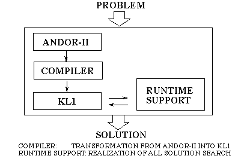

(30) Parallel Problem Solving System
Machine: Multi-PSI
Environment: PIMOS
Language: KL1
Source Code: 0.3 MB
Documents: None
Overview
A system with a simple description and a high reasoning power for
parallel problems.
Configuration

Function
- ANDOR-II, a logic programming language which comprises both AND-
and OR- parallelism, provides a declarative description to parallel
problems with nondetermin- ism.
- Possible worlds are created with each OR-branch and reductions on
them are performed in parallel.
- The ANDOR-II program is compiled into KL1 using coloring scheme,
which realizes high parallelism.
- Meta-function of communication between possible worlds can reduce
search space.
- Load balancing on Multi-PSI improves the efficiency.
FTP
- Parallel Problem Solving System [72K]

www-admin@icot.or.jp